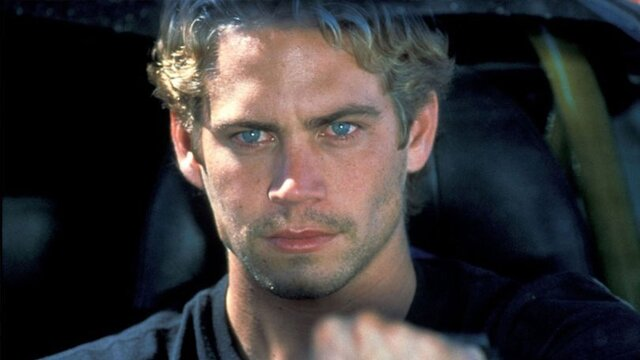

Paul Walker'ın Kısaca Hayatı
Paul William Walker IV, 12 Eylül 1973 yılında Glendale, Kaliforniya'da emekli kanalizasyon müteahhiti Paul William Walker III ve eski model Cheryl Crabtree’nin çocuğu olarak dünyaya geldi. Büyükbabası William Walker (diğer adıyla ‘Irish’ Billy Walker) Pearl Harbor baskınından kurtulanlardan biriydi ve aynı zamanda da donanmanın orta siklet boks şampiyonuydu. Dedesi ise II. Dünya Savaşı’nda General Patton’ın komutasında İtalya’nın istilası sırasında bir tank müfrezesini kumanda etti. Kendisinden küçük Caleb ve Cody adında iki erkek kardeşi ve Ashlie adında bir kız kardeşi olan Walker, Ahir Zaman Azizi olarak Mormon Mezhebi'ne mensup muhafazakâr bir ailede yetişti. Glendale'de büyüyen Walker, ilk önce Alfred Nobel Okulu’na ardından Foreman Lisesi’ne devam etti. 1991'de mezun olmasının ardından birkaç kolejlerde deniz biyolojisi okudu. Geçmişte çeşitli suçlar işlediğinden kendisi de bahseden ünlü oyuncu, bunlarla ilgili hiçbir zaman ceza almadı. 1980'lerin sonunda modelliğe başlayan Paul Walker, oyunculuk kariyerine, içlerinde Monster In The Closet ve Tammy and the T-Rex’in bulunduğu düşük bütçeli B sınıfı filmlerle başladı. 1993 yılında pembe dizi The Young and The Restless’da kısa bir süre rol aldı. 1998’de oynadığı ve alaycı eleştiriler alan Meet the Deedles’daki rolüyle ilk kez geniş bir kitleye ulaştı. Ardından Reese Witherspoon ile oynadığı ve lise takımında oynayan bir basketbolcuyu canlandırdığı Pleasantville filmiyle iyi karşılandı. 1999–2001 yılları arasında ise genç izleyiciye hitabeden She’s All That ve Varsity Blue gibi filmlerde oynadı. 2001 yılında Vin Diesel ile birlikte başrolünde oynadığı The Fast and the Furious filmiyle müthiş bir çıkış yakalayan Walker, bu filmin ardından birçok aksiyon macera filminde oynadı. Walker aynı zamanda serinin devam filmi 2 Fast 2 Furious'da rol aldı. Serinin dördüncü filmi olan ve Temmuz 2009 yılında çıkan Fast & Furious'da Vin Diesel ile yeniden başrolü paylaştı. Hızlı ve Öfkeli serisindeki polis memuru Brian O'Conner oldukça sevilen bir karakter olmakla beraber Paul Walker'a da ün kazandıran bir rol oldu. Şubat 2001’de MostBeautifulMan.com tarafından ayın en güzel erkeği seçilen Walker, 2002 yılında People Dergisi tarafından Dünyanın En Güzel 50 İnsanı arasında yer aldı. 2006 yılında aksiyon filmi Running Scared ve Antarktika’da çekilen macera filmi Eight Below filmlerinde oynadı. Aynı zamanda bir aile filmi olan Disney yapımı Eight Below, gösterime girdiği ilk dört gün içinde 24 milyon dolardan fazla gişe hasılatı yaptı. Ondan önce rol aldığı Timeline ve Into The Blue adlı filmleri kötü eleştiriler alan Walker, bu filmde oldukça beğenildi ve olumlu yorumlar aldı. Running Scared filmindeki rolü yönetmen Wayne Cramer’e göre, Walker’ın şimdiye kadar oynadığı roller arasında kendi kişiliğine en yakın olan roldü. Santa Barbara, Kaliforniya'daki Huntington Plajı'nda yaşayan ve sörf yapmaktan hoşlanan Walker’ın, eski kız arkadaşından annesiyle birlikte Hawaii’de yaşayan Meadow Rain isimli bir kızı var. Brezilya Jujitsusu yapan Walker’ın bir av köpeği, bir Chesapeake Bay köpek yavrusu ve Kovboy adında bir de atı vardı. 30 Kasım 2013 tarihinde Santa Clarita, Kaliforniya'da arkadaşının kullandığı aracın aşırı hız nedeniyle kontrolünü kaybedip bir ağaca çarpması sonucunda arkadaşıyla beraber hayatını kaybetti. 40 yaşında geçirdiği trafik kazası ile hayatını kaybeden Paul sevenlerini hüzne boğdu. Hızlı ve Öfkeli serisiyle müthiş bir çıkış yakalayan Walker, bu filmin ardından birçok aksiyon macera filminde oynamıştı. Hızlı ve Öfkeli serisinde oynadığı Brian O'Conner karakterinin kendisine verilmesinin sebeplerinden bir tanesi yapımcı Neal H. Moritz ve yönetmen Rob Cohen'ın açıklamalarına göre Paul'un yüksek derecede araba tutkusu olmasıydı ve bu tutku sayesinde filmde bunu seyirciye iyi yansıttığını düşünmüşler. Kendisi profesyonel araba yarışı pilotuydu ve bu yeteneği sayesinde Hızlı ve Öfkeli serisi sırasında dublör kullanması diğer oyuncular kadar fazla gerektirmedi. Yayıncı Ame Van Iden, Paul Walker'ın Cumartesi günü (30.11.2013) yerel saatle öğleden sonra bir kazada öldüğünü doğruladı ancak daha fazla detay vermedi. Daha sonra kazada 2 kişinin öldüğünü, Paul Walker'ın yolcu koltuğunda olduğunu bildirdi. Açıklamaya göre arkadaşı olan sürücü Roger Rodas direksiyon hakimiyetini kaybetmesi sonucu yoldan çıkan Porsche marka aracın bir ağaca çarptıktan sonra alev alarak yanmaya başladığını ve tamamen hurdaya döndüğü belirtti.
